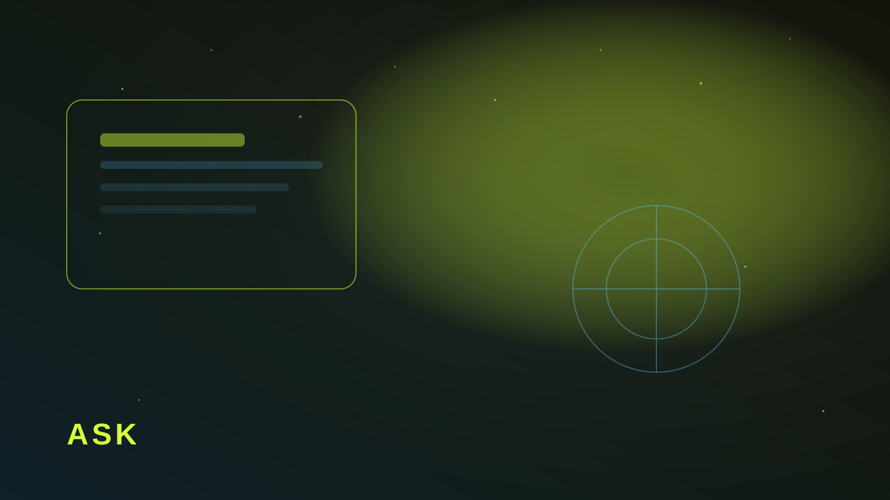

Бриф, с которым можно стартовать
Нужны цель запуска, аудитория, обязательные страницы, каналы заявок, сроки и кто утверждает. Без этого ТЗ переписывают на второй неделе. Короткий бриф из 10 вопросов работает лучше длинного документа.
Отдельно спросите: что будет считаться успехом через месяц. Рначе красивый сайт без понятной метрики.

Вопросы, которые экономят недели
- Какое одно действие должен сделать посетитель?
- Куда должны падать заявки?
- Что нельзя менять в бренде?
- Какие интеграции обязательны в первый месяц?
- Кто принимает решение по дизайну и текстам?
Ответы на эти вопросы — уже половина проекта. Остальное можно уточнять по ходу, не ломая основу.